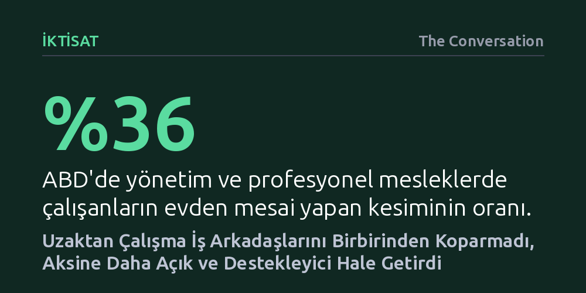

IKTISAT · The Conversation · 2026-10-17
Uzaktan çalışma, sanılanın aksine meslektaşları birbirinden koparmak yerine ev hallerini görünür kılarak aralarındaki samimiyeti ve psikolojik güveni artırdı. Kişisel zorluklarını çekinmeden paylaşan çalışanlar iş yükünü daha iyi bölüşerek birbirlerine etkin destek sağladı.
Uzaktan çalışmanın çalışanlar arasındaki bağları zayıflattığı varsayımını çürüterek, ev ortamının getirdiği şeffaflığın işyerinde psikolojik güveni ve karşılıklı yardımlaşmayı güçlendirdiğini gösteriyor.

Pandemiyle birlikte uzaktan çalışmaya geçildiğinde yöneticiler ve örgüt araştırmacıları arasında yaygın bir kaygı hakimdi: Fiziksel temas ortadan kalktıkça çalışanlar arasındaki sosyal bağlar zayıflayacak ve kurum kültürü aşınacaktı. Uzun yıllar boyunca ofis ortamı, mesleki bağlılığın vazgeçilmez zemini olarak kabul edildi. Oysa bu fiziksel birliktelik, çalışanların gerçek insani hallerini gizlemek zorunda hissettikleri yapay bir profesyonellik perdesi üretiyordu.
Geleneksel ofis düzeninde çalışanlar, birbirlerini yalnızca birer iş arkadaşı olarak görme eğilimindeydi. İş yapma kapasitelerini sınırlandırabilecek kişisel sorunları ya da ailevi sorumlulukları dile getirmek bir zafiyet işareti sayılıyordu. İki küçük çocuk annesi Tamara'nın ifade ettiği gibi, "Dün gece hiç uyumamış olsanız bile işe gelip gülümsemeniz ve iyi görünmeniz bekleniyordu." Bu zorlama vitrin, çalışanları aynı binada tutsa da aralarındaki sahici yakınlaşmayı engelliyordu.
Bir yönetim bilimci, bu dönüşümün gerçek etkilerini anlamak amacıyla profesyonel hizmetler sunan bir şirketi pandemi öncesinden 2024 yılına kadar yakından inceledi. Yaklaşık 330 saatlik gözlem ve 275 derinlemesine mülakata dayanan saha çalışmasında, haftanın büyük kısmını evden çalışarak ve toplantılara video aracılığıyla katılarak geçiren personelin etkileşimleri adım adım takip edildi.
Beklenen kopuşun aksine, video görüşmeleri çalışanların özel hayatına dair en doğal ayrıntıları görünür kıldı. Kameranın önünden geçen evcil hayvanlar, arka planda koşuşturan çocuk sesleri, odaya girip ekrandakilere selam veren eşler ve sohbet gruplarında paylaşılan yemek fotoğrafları meslektaşların birbirlerini ilk kez tüm yönleriyle tanımasını sağladı. Yıllardır aynı ofisi paylaşıp birbirinin yaşamından habersiz olan çalışanlar bile bu kendiliğinden gelişen şeffaflık sayesinde çok daha hızlı ve derin bağlar kurdu.
Yönetim literatüründe çalışanların hata yapmaktan, yardım talep etmekten ya da yargılanmaktan çekinmeksizin fikirlerini dile getirebilmesi psikolojik güvenlik olarak adlandırılıyor. Saha çalışması, uzaktan çalışmanın bu güven duygusunu zedelemek bir yana belirgin biçimde geliştirdiğini ortaya koydu. Özel hayatın getirdiği zorluklar ekranda doğal biçimde görünür oldukça, çalışanlar ayrılık acısı veya tükenmişlik gibi kişisel meselelerin iş performansını etkilediğini açıkça paylaşmaya başladılar.
Bu şeffaflık ortamı, çalışma arkadaşları arasında pratik bir dayanışma mekanizması yarattı. Örneğin babası aniden rahatsızlanan bir çalışanın ortak projelerdeki sorumluluklarını mesai arkadaşı gönüllü olarak devraldı. Bu sayede hem çalışan ailesine vakit ayırabildi hem de bir personelin yokluğunda işlerin tamamen tıkanmasının önüne geçildi. Bu kazanımlar genç ya da yaşlı, çocuklu ya da çocuksuz tüm çalışan gruplarında benzer şekilde karşılık buldu; paylaşım arttıkça güven güçlendi, güven güçlendikçe işbirliği kolaylaştı.
Organization Science dergisinde yayımlanacak olan bulgular, işverenlerin ve yöneticilerin uzaktan çalışmaya dair yerleşik önyargılarını sarsıyor. Birçok şirket çalışanları yeniden ofislere çekmenin sosyal bağı güçlendireceğini savunurken, araştırma verileri fiziksel mesafenin sanılanın aksine bir yabancılaşma üretmediğini kanıtlıyor.
Evden çalışma uygulamaları, doğru kurgulandığında çalışanların birbirini önyargısız tanımasını sağlayan ve ekip içi dayanışmayı artıran stratejik bir kurumsal avantaja dönüşebiliyor. Yöneticilerin uzaktan çalışmayı yalnızca bir maliyet veya verimlilik kalemi olarak değil, işyerinde samimi ve sürdürülebilir bir güven ortamı tesis etmenin güçlü bir yolu olarak değerlendirmesi gerekiyor.